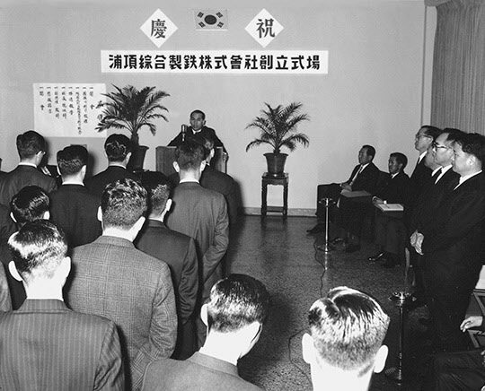
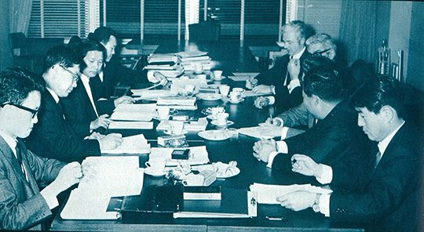
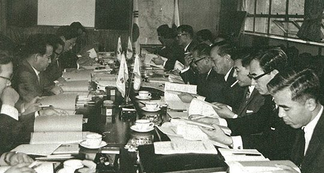
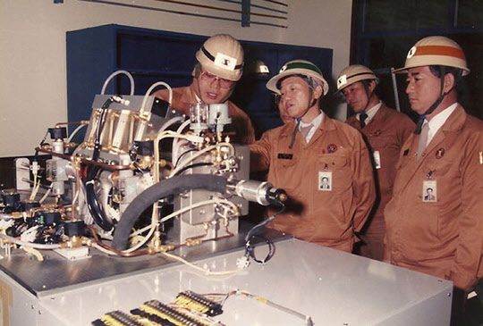

보도일 2014-11-13출처 조선일보 프리미엄조선 연재
박태준은 진작부터 대한중석 인재들을 종합제철로 데려갈 생각을 굳히고 있었다. 한국 최고의 안정된 직장을 버리고 불확실한 쪽을 택해야 하는 그들에게 그는 힘차게 말했다.
“대한민국도 이제 밥 먹고 사는 것은 별 문제가 없다. 그러나 남자로 태어나서 밥만 먹다가 죽을 수는 없는 것 아니냐? 내가 세계 각국을 돌아보면서 수없이 한국을 일본과 비교하며 생각해봤다. 나는 한국인과 일본인 사이에는 우열의 차이가 없다고 본다. 그런데 일본은 패전국이면서 잘 살고 있는데, 우리는 그렇지 못하다. 그러니 가자. 종합제철로 가서 우리가 함께 고생하면서 이런 상황을 극복하는 일에 앞장서 보자. 우리가 종합제철을 잘 하게 되면 일본을 따라잡을 길도 열리게 된다.”
1968년 4월 1일 포항종합제철주식회사(POSCO)는 서울 유네스코회관 3층에서 창립했다. 박태준은 4가지 운영목표를 제시했다.
인화단결과 상호협조
기술자 훈련의 적극추진
건설관리의 합리화
경제적 투자체제의 확립
최초 조직은 간단했다. 고작 2실 8부였다. 비서실, 조사역실, 기획관리부, 총무부, 외국계약부, 업무부, 기술부, 생산·훈련부, 건설부, 포항건설본부.

창립요원엔 대한중석 인재들이 대거 포함되었다. 박태준의 말을 빌리면 ‘남자로 태어나서 밥만 먹다가 죽을 수는 없다’고 생각한 사내들, ‘한국인과 일본인은 우열의 차이가 없는데 우리가 종합제철을 잘 해서 민족의 자존심도 세우고 우리도 일본처럼 잘 살아 보자’라는 사내들이 좋은 직장을 버리고 영일만으로 내려가겠다고 결정한 것이었다.
고준식 전무이사, 황경노 기획관리부장, 노중렬 외국계약부장, 안병화 업무부장, 장경환 생산‧훈련부 차장, 홍건유, 김규원, 이종열, 이원희, 심인보, 김완주, 도재한, 이상수, 현영환, 이영직. 39명으로 출발했으나 곧 퇴사한 5명을 뺀 ‘창립요원 34명’ 중 사장까지 16명이 대한중석 출신이었다. 박태준의 육사 후배로서 판문점에 근무하던 박철언을 소개해준 정재봉도 창립요원으로 참여했다.
이러한 인적 구성은 무엇보다 미래가 불확실한 신생 조직의 인화단결과 상호협조에 기여할 자산이었다.
대한중석 출신이 아닌 사람들로는 윤동석, 이홍종, 김창기, 배환식, 유석기, 최주선, 김명환, 이관희, 백덕현, 이건배, 육완식, 여상환, 권태협, 신광식, 박준민, 안덕주, 지영학 등이 창업요원에 이름을 올렸다. 비록 창립명단에는 빠졌으나 대한중석의 박종태는 포항건설본부의 초대 소장이 되고, 박태준의 고향 후배이자 회계전문가인 박득표가 창립요원과 진배없이 합류하며, 머잖아 포항 출신의 이대공도 박태준의 청을 받은 포항 국회의원(김장섭)의 천거에 의해 입사한다.
잉태와 유산을 거듭했던 종합제철이 ‘포항제철(POCSO)’이란 법인으로 탄생했을 때, 포항 현지에선 이미 경상북도가 주관하여 국유지 11만8800평을 포함한 총 232만6951평 공장부지 매수를 진행하고 있었다. 그러나 포스코의 장래는 여전히 암울했다. 차관 도입을 실행하지 않는 KISA, 특히 미국과 서독이 부정적 태도를 견지했다. 만약 KISA를 통한 차관 도입에 실패하고 그 대안의 길을 찾지 못한다면, 고작 4억 원의 자본금으로 태어난 포스코는 ‘신생아’ 단계에서 굶어죽는 운명을 맞아야 했다.
4월 8일 경제기획원이 KISA에게 기본협정상 권리와 의무를 포스코가 승계했음을 통보했다. 종합제철사업건설추진위원회는 해체되고, 위원회가 일본 용역단, 미국 바텔연구소와 체결한 KISA의 기술계획에 대한 검토용역 계약도 포스코가 이어받았다. 이제 앞으로는 박태준과 그의 동료들이 ‘신생아 포스코’의 어버이로서 모든 책임을 떠맡아야 한다는 뜻이었다.

박태준은 치밀하게 시간표를 작성했다. 방대한 업무를 하나하나 차질 없이 진행하는 한편, 경제팀 관료들과 함께 KISA와 접촉해 나갔다. 관료들은 4월 16일부터 워싱턴에서 열리는, 한국경제를 지원하려는 국제기구인 IECOK(1966년 12월 파리에서 결성)의 제2차 총회에 기대를 걸고 종합제철 차관 1억916만9000 달러를 포함한 총 6억7000만 달러의 경제개발 차관을 요청했다. 하지만 겨우 4269만 달러의 차관 제공을 통보받았으며, 종합제철 차관에 대한 언급은 일언반구도 없었다.
그렇게 불투명하고 불안한 상황 속에서 박태준은 그해 2월 2일 체결한 계약에 따라(연재 34회) 4월 27일 일본철강연맹의 초청으로 일본에 가서 일반기술계획(GEP) 사전 검토, 기술자 훈련문제, 항만과 공장 건설의 공정관리 등을 의논했다. 그는 포스코 안에 구성할 GEP검토단을 매우 중요하게 보았다. 회사가 처음 경험하는 고급 제철기술이라는 차원에서 검토단을 구성했다.
한국정부가 KISA와 체결한 기본협정에는 ‘1968년 6월 20일 KISA가 GEP를 한국측에 제출하고 그것을 한국측이 30일 내에 검토해서 확정하기’로 돼 있었다. 이제 그 ‘한국측’은 포스코였다.
포스코는 5월 초에 GEP검토단 구성을 확정했다. 윤동석 부사장이 단장, 유석기 기술부장이 팀장, 부문별로는 박준민이 제선설비, 신광식이 제강설비, 이상수가 일반설비, 이건배가 동력설비, 안덕주가 원료처리설비와 제철소 레이아웃, 백덕현이 압연설비와 전체 종합을 각각 맡았다. 박태준은 검토단의 활동에 대해 신중하고 정교한 결정을 내렸다.
‘모든 제철설비가 생소하니 일본용역단과 함께 피츠버그로 떠나기에 앞서 충분한 여유를 갖고 먼저 일본으로 들어가서 제철소를 견학하고 어느 정도 사전 지식을 쌓은 다음에 일본 측의 설비별 담당자와 일 대 일로 짝을 이뤄서 미국으로 출발할 것.’

그에 따라 포스코 검토단은 5월 7일 일본으로 건너가 일본용역단과 GEP 주요 항목에 대한 체크리스트를 보완한 뒤 고로 4기, 연속식 열연공장, 냉연공장 등을 두루 갖춘 치바제철소와 홋카이도의 무로랑제철소를 견학했다. 이때의 견학 소감을 백덕현은 이렇게 털어놓았다.
“고로 높이가 110m였고 고로용 송풍발전의 구동용량이 최소 2만kw에서 3만kw였는데, 그 구조물의 높이는 상상을 초월하는 것이었고, 당시 우리나라 발전능력의 총량이 80만kw였으니 압도를 당할 수밖에 없었어요. 제선, 제강, 압연이라는 주력공장 외에도 코크스, 소결, 원료처리, 산소공장, 보일러공장, 발전소, 대형 항만설비, 공작공장, 각종 부대설비 등 모두가 우리의 상식을 완전히 벗어나는 내용이었어요.
그때 일본에서 첨단으로 알려진 무로랑제철소에서는 견학뿐만 아니라 질의응답도 많이 했는데, 비로소 종합제철소에 대한 어떤 감 같은 것을 잡게 되었어요.”
5월 18일 포스코 검토단은 일본용역단과 함께 미국으로 건너가 바텔연구소 요원들과 결합해 20일부터 피츠버그에서 KISA의 GEP 초안을 검토하기 시작했다. KISA가 협정상의 일정보다 한 달쯤 앞당겨 그것을 마련한 것이었다.
포스코 검토단이 아무리 눈에 불을 켜도 일본용역단의 수준을 따라갈 수는 없었다. 그래서 포스코 검토단보다 일본용역단이 월등히 많은 문제점을 지적했다. 그 대부분은 ‘계획한 설비사양으로는 소기의 생산량을 확보할 수 없다, 그런 설비와 생산방식으로는 제품의 품질을 확보하기 어렵다’는 것이었다. 전문적인 철강용어를 빼고 누구나 한마디로 알아듣기 쉽게 표현하자면, KISA의 GEP는 싸구려 설비사양으로 구성돼 있었다.
이후락의 부탁을 받아 동경대학 김철우 박사의 조언을 들어가며 종합제철 건설을 추진했던 신격호 롯데그룹 회장(연재 27회 참조)은 일본에서 제철 기술자들과 자체적으로 검토했던 KISA의 GEP에 대해 그로부터 이십여 년 지나서 분노에 가까운 회고를 남겼다.

<미국 코퍼스사 등이 자기네들에게는 쓸모가 없어진 구식 설비와 낡은 고로를 터무니없이 비싼 가격으로 한국에 떠맡기려 한다는 것을 알게 되었다. 나는 내심 당황해 했다. 그런 엉터리 공장을 짓는다는 것은 우리나라의 산업발전을 영원히 후진국의 늪으로 떨어지게 하는 것과 마찬가지였기 때문이다. 그때 단신으로 그 부당성을 지적하고 나선 사람이 있었으니 그가 바로 박태준이었다. 박태준은 원리원칙에 입각해서 그 부당성을 지적하고 나섰다.>
1970년에 포항종합제철을 지원할 일본기술단(JG) 단장으로 영일만에 부임하는 후지제철 기술부장 아리가는 이런 증언을 남겼다.
<1968년 5월 포항제철과 KISA와의 사이에서 설비사양에 대한 사전협의를 위해 기술자 일단을 미국의 피츠버그에 보냈으며 여기에는 JG멤버들도 동행했다. 일행은 약 40일간 피츠버그에 체재하면서 KISA 계획을 검토했지만, 어느 설비도 우리 눈으로 보아서는 불충분했다.
JG가 크고 작은 100여 개의 결함을 지적한 결과, 설비사양은 변경에 이은 변경으로 설비금액은 2,000만 달러 가까이 상승해 1억1200만 달러로 부풀어 있었다. 그래도 우리들의 표준으로 보아 만족하기엔 거리가 먼 것이었다. KISA가 제공하려는 기계설비는 엉성하기 짝이 없는 결함상품이었다. 코크스로도 없었다. 그렇기 때문에 고로에 필요한 코크스는 수입하지 않으면 안 되는데, 어떻게 구입해야할지 불분명했다.
따라서 일관제철소에 반드시 있어야 하는 코크스로의 가스에 의한 에너지 자급도 불가능하고, 자가발전 설비도 없었다. 철광석을 선처리하는 소결설비도 없었다. 제품은 후판과 핫코일이었지만, 압연기는 2기밖에 없었다. 이것을 가지고 분괴압연과 후판과 코일압연을 전부 처리한다는 것은 과거시대의 유물이라고 할 수 있는 ‘간이 스트립 밀’에 불과했다. 자동차용 강판 등 고급제품의 제조를 기대하는 것은 난망한 일이었다.
KISA의 간사 회사인 코퍼스는 수년 전 이것과 거의 같은 설비를 터키에 판매해 제철소를 건설했지만, 그것이 순조롭게 가동되고 있지 않다는 것은 세계 철강업계가 다 아는 사실이었다.>
KISA의 GEP에 대한 검토 결과를 보고 받은 박태준은 그의 얼굴에서 단연 타인의 시선을 끄는 그 ‘호랑이 눈썹’을 무섭게 치켜세웠다. 1967년 여름에 품었던 자신의 ‘미심쩍은 의문사항들’(연재 29회)에 대한 결정적 증거를 잡은 것 같았다. 그는 치가 떨렸다. 진작부터 KISA에 그림자를 드리우고 있는 아이젠버그(연재 15회)를 쫓아내고 싶었다. 그 무렵에 박태준과 만났던 박철언(연재 15회)은 이렇게 회고했다.
<한국정부는 이미 미국 코퍼스사를 필두로 구미 5개국 8개사로 구성된 컨소시엄인 KISA와의 사이에 연산 60만 톤 규모의 제철소를 포항에 건설하기로 하고, 이에 필요한 엔지니어링 및 기기 대금으로 총액 1억 달러에 달하는 구매계약을 체결했다. 그 시점까지의 진척사항을 세밀하게 검토한 박태준은 망연자실했다. 계약 내용은 극도로 황당무계하며 몹시 불공정한 것이었다. 나는 당시 그의 사무실로 찾아간 적이 있었다.
보통은 과묵한 사람인데 그날은 점심을 하면서 꽤 많은 잡담을 했다. 나는 그의 말이 잡담으로 들리지 않았다. 국가 이익이 어디에 있고, 무엇이라고 하는 그의 절규가 나를 감동시켰다. 박태준은 제철과 같은 기간산업이 가져야 할 국가적인 좌표에 대해 확고한 신념을 가지고 있었다. “어떠한 사업이라도 성실함과 도덕성이 없는 상인(商人)이 개입하면 실패합니다.
지금 KISA의 주변을 얼쩡거리고 있는 아이젠버그의 그림자가 교활하고 싫습니다. 무섭습니다. 사업이 국제경쟁력이 없고 이윤이 보장되지 않으면 결국 국익에 해를 끼칩니다. 이것을 도외시한 계획은 죄악입니다. 제철에는 선진기술의 도입과 이전이 실현되지 않으면 안 되고, 필요자금의 해외 조달이 가능하지 않으면 안 됩니다.” 박태준의 주장은 논리 정연했다. KISA는 그가 생각하는 필수조건을 충족시키지 못했다.
그가 본인 입으로 말하지는 않지만, 나는 박태준이 KISA와의 교섭이 성립되기보다는 좌절되기를 마음속으로 기대하고 있지 않나 의심했다."
그러나 박태준은 당장에 뾰족한 수가 없었다. 부당성에 대해 정식으로 지적하고 문제를 제기해서 최대한 바로잡도록 해야 한다. 이것뿐이었다. 그러나 장사치들이 바보인가. 자기 이득을 해치려는 자에게 당하고만 있을, 그런 순진한 장사치가 있겠는가.